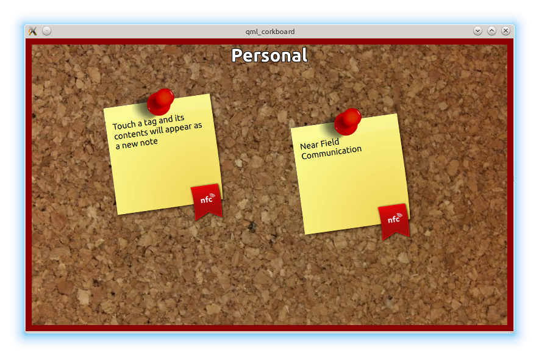

QML CorkBoard Example
A QML example about displaying NFC Data Exchange Format (NDEF) messages.
The QML corkboard example displays the contents of NDEF messages read from an NFC Tag. Each newly detected NDEF message is added to the corkboard and can be dragged into an arbitrary position on the board. The corkboard has a Personal and Work space. The workspace can be changed by sliding left or right.

Implementation details
In the corkboard example, we use the following .qml files:
- corkboards.qml
- Mode.qml
The main.cpp holds the application logic to load the main view stored in the corkboards.qml file.
int main(int argc, char *argv[]) { QGuiApplication application(argc, argv); QQuickView view; view.setSource(QUrl("qrc:/corkboards.qml")); view.setResizeMode(QQuickView::SizeRootObjectToView); view.show(); return application.exec(); }
corkboards.qml details
There are two basic QML components in this file:
- NearField
- ListView
The first time the NearField QML type is instantiated, the Component.onCompleted handler will start the NFC polling process. The onMessageRecordsChanged handler parses NFC Messages that are detected by the NearField component and builds up a data model that is passed into the ListView. Additionally, every time the NearField manager stops the polling process, the onPollingChanged handler restarts it.
NearField {
property bool requiresManualPolling: false
orderMatch: false
onMessageRecordsChanged: {
...
onPollingChanged: {
...
Component.onCompleted: {
...
}
The ListView component takes a ListModel as parameter (built from the NFC records). The view of each of the items of the model is defined by the Mode component (its implementation details can be found in the file Mode.qml). The data model consists of a list of corkboards. Each corkboard can display multiple NFC text message records.
ListView {
id: listView
...
model: list
...
delegate: Mode {}
}
Mode.qml details
A corkboard title is displayed for each of the items that form part of the data model:
Text {
anchors { horizontalCenter: parent.horizontalCenter; top: parent.top; topMargin: 10}
text: name;
font { pixelSize: 30; bold: true }
Every text record that was read from an NFC message, is represented by a sticky note with its own position on the display. Initially the position is set randomly. The text on the sticky note is set on a TextField.
Repeater {
model: notes
Item {
id: stickyPage
x: ListView.width * (0.7 * Math.random() + 0.1)
y: ListView.height * (0.7 * Math.random() + 0.1)
...
Item {
id: sticky
...
TextEdit {
id: myText
text: noteText
...
}
...
Running the Example
To run the example from Qt Creator, open the Welcome mode and select the example from Examples. For more information, visit Building and Running an Example.
See also Qt NFC.